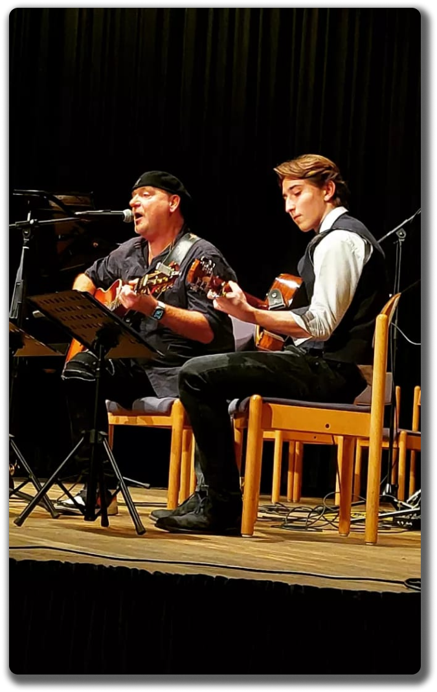
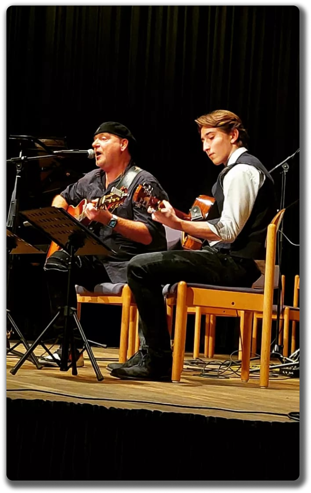

Songwriting
Eigene Harmonien, Hooks und Texte entstehen aus Notizen, Sprachmemos und spontanen Melodien.
Meine Leidenschaft
Mit fünf Jahren hielt ich zum ersten Mal eine Gitarre in der Hand. Seitdem begleite ich Veranstaltungen, schreibe eigene Songs und sammle Ideen in improvisierten Sessions mit Freundinnen und Freunden.
 



Frühe Musikstunden legten die Basis. Später kamen eigene Experimente, Live-Auftritte und das Aufnehmen zu Hause dazu. Jede Session bedeutet Lernen, Beobachten und die Suche nach einem besonderen Klang.
Heute kombiniere ich klassische Spieltechniken mit moderner Produktion: Loops, Mehrstimmigkeit, dezente Effekte und ein Gefühl für Dynamik.
Aufnahmen, Feedback und gezielte Wiederholungen helfen mir, Timing und Ausdruck zu perfektionieren.
Gemeinsame Sessions mit Sängerinnen, Produzenten oder Bands inspirieren zu neuen Ideen.
Jeder Auftritt ist anders. Die Reaktion des Publikums motiviert, neue Songs zu schreiben und Setlists anzupassen.

Eigene Harmonien, Hooks und Texte entstehen aus Notizen, Sprachmemos und spontanen Melodien.
Mit Ableton, Loops und Effekten baue ich Skizzen zu vollständigen Demos aus.
Kleine Bühnen, Wohnzimmerkonzerte oder Events – immer mit Fokus auf Atmosphäre und Publikum.
Ob Session, Auftritt oder Songidee – schreib mir und lass uns etwas Neues starten.